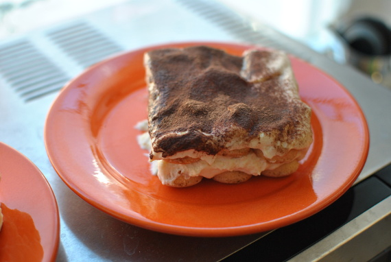

Tiramisu

- Zubereitung: ca. 20 Minuten
- Ruhezeit: ca. 1 Stunde
Zutaten
- 100 g Puderzucker
- 4 Eigelb
- 2 Eiweiß
- 2 cl Amaretto
- 2 Tassen starker Kaffee oder Espresso
- 500 g Mascarpone
- 250 g Löffelbiskuits
- Kakaopulver
Zubereitung
- Eigelb, Puderzucker, Mascarpone und Amaretto cremig rühren. Das Eiweiß steif schlagen und vorsichtig unterheben. Die Löffelbiskuits mit dem Espresso/starken Kaffee tränken oder nach Geschmack auch nur einpinseln. 4 Lagen Schichten, begonnen
mit Biskuits, Mascarponecreme, Biskuits und wieder Mascarponecreme. Mit Kakao dick bestäuben und kühl stellen.